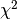

LombScargle¶
-
class
lombscargle.LombScargle(t, y, dy=None, fit_bias=True, center_data=True) [edit on github][source]¶ Bases:
objectCompute the Lomb-Scargle Periodogram
Parameters: t : array_like or Quantity
sequence of observation times
y : array_like or Quantity
sequence of observations associated with times t
dy : float, array_like or Quantity (optional)
error or sequence of observational errors associated with times t
fit_bias : bool (optional, default=True)
if True, include a constant offet as part of the model at each frequency. This can lead to more accurate results, especially in then case of incomplete phase coverage.
center_data : bool (optional, default=True)
if True, pre-center the data by subtracting the weighted mean of the input data. This is especially important if
fit_bias = FalseExamples
Generate noisy periodic data:
>>> rand = np.random.RandomState(42) >>> t = 100 * rand.rand(100) >>> y = np.sin(2 * np.pi * t) + rand.randn(100)
Compute the Lomb-Scargle periodogram on an automatically-determined frequency grid & find the frequency of max power:
>>> frequency, power = LombScargle(t, y).autopower() >>> frequency[np.argmax(power)] 1.0016662310392956
Compute the Lomb-Scargle periodogram at a user-specified frequency grid:
>>> freq = np.arange(0.8, 1.3, 0.1) >>> LombScargle(t, y).power(freq) array([ 0.0204304 , 0.01393845, 0.35552682, 0.01358029, 0.03083737])
If the inputs are astropy Quantities with units, the units will be validated and the outputs will also be Quantities with appropriate units:
>>> from astropy import units as u >>> t = t * u.s >>> y = y * u.mag >>> frequency, power = LombScargle(t, y).autopower() >>> frequency.unit Unit("1 / s") >>> power.unit Unit(dimensionless)
Note here that the Lomb-Scargle power is always a unitless quantity, because it is related to the  of the best-fit periodic model at each frequency.
Methods Summary
autofrequency(t[, heuristic])Determine a suitable frequency grid for data autopower([frequency_heuristic, method, ...])Compute the Lomb-Scargle power at the given frequencies model(t, frequency)Compute the Lomb-Scargle model at the given frequency power(frequency[, normalization, method, ...])Compute the Lomb-Scargle power at the given frequencies Methods Documentation
-
classmethod
autofrequency(t, heuristic='baseline', **kwds) [edit on github][source]¶ Determine a suitable frequency grid for data
Parameters: t : array_like or Quantity
The sampling times of the data
heuristic : string
The type of heuristic to use. Currently only ‘baseline’ is supported
**kwargs :
additional keyword arguments will be passed to the frequency heuristic.
Returns: frequency : ndarray or Quantity
The heuristically-determined optimal frequency bin
-
autopower(frequency_heuristic='baseline', method='auto', method_kwds=None, normalization='normalized', **kwargs) [edit on github][source]¶ Compute the Lomb-Scargle power at the given frequencies
Parameters: frequency_heuristic : string (optional, default=’baseline’)
the frequency heuristic to use. By default, it is assumed that the observation baseline will drive the peak width.
method : string (optional)
specify the lomb scargle implementation to use. Options are:
- ‘auto’: choose the best method based on the input
- ‘fast’: use the O[N log N] fast method. Note that this requires
evenly-spaced frequencies: by default this will be checked unless
assume_regular_frequencyis set to True. slow: use the O[N^2] pure-python implementationmatrix: use the O[N^2] matrix/linear-fitting implementationscipy: usescipy.signal.lombscargle, which is an O[N^2] implementation written in C. Note that this does not support heteroskedastic errors.
method_kwds : dict (optional)
additional keywords to pass to the lomb-scargle method
normalization : string (optional, default=’normalized’)
Normalization to use for the periodogram. Options are ‘normalized’ or ‘unnormalized’.
**kwargs :
additional keyword arguments will be passed to the frequency heuristic.
Returns: frequency, power : ndarrays
The frequency and Lomb-Scargle power
-
model(t, frequency) [edit on github][source]¶ Compute the Lomb-Scargle model at the given frequency
Parameters: t : array_like, length n_samples
times at which to compute the model
frequency : float
the frequency for the model
Returns: y : np.ndarray, length n_samples
The model fit corresponding to the input times
-
power(frequency, normalization='normalized', method='auto', assume_regular_frequency=False, method_kwds=None) [edit on github][source]¶ Compute the Lomb-Scargle power at the given frequencies
Parameters: frequency : array_like or Quantity
frequencies (not angular frequencies) at which to evaluate the periodogram. Note that in order to use method=’fast’, frequencies must be regularly-spaced.
method : string (optional)
specify the lomb scargle implementation to use. Options are:
- ‘auto’: choose the best method based on the input
- ‘fast’: use the O[N log N] fast method. Note that this requires
evenly-spaced frequencies: by default this will be checked unless
assume_regular_frequencyis set to True. slow: use the O[N^2] pure-python implementationmatrix: use the O[N^2] matrix/linear-fitting implementationscipy: usescipy.signal.lombscargle, which is an O[N^2] implementation written in C. Note that this does not support heteroskedastic errors.
assume_regular_frequency : bool (optional)
if True, assume that the input frequency is of the form freq = f0 + df * np.arange(N). Only referenced if method is ‘auto’ or ‘fast’.
normalization : string (optional, default=’normalized’)
Normalization to use for the periodogram. Options are ‘normalized’ or ‘unnormalized’.
fit_bias : bool (optional, default=True)
if True, include a constant offet as part of the model at each frequency. This can lead to more accurate results, especially in the case of incomplete phase coverage.
center_data : bool (optional, default=True)
if True, pre-center the data by subtracting the weighted mean of the input data. This is especially important if
fit_bias = Falsemethod_kwds : dict (optional)
additional keywords to pass to the lomb-scargle method
Returns: power : ndarray
The Lomb-Scargle power at the specified frequency
-
classmethod